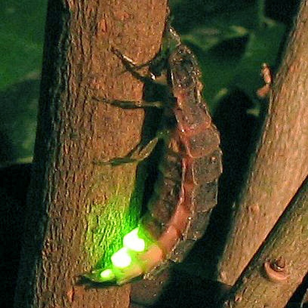
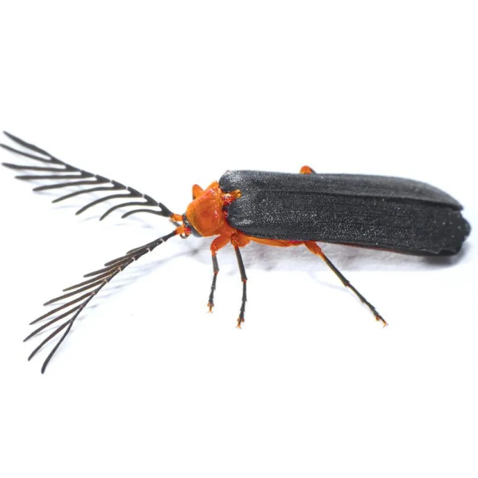

Female

Male
Microphotus angustus
Common name
California Pink Glow-Worm
Family
Lampyridae
Family common name
Fireflies
Commonly observed
February to Julyr
Size
Males about 1.4 cm, females about 1.7 cm
Range Map
Seasonality